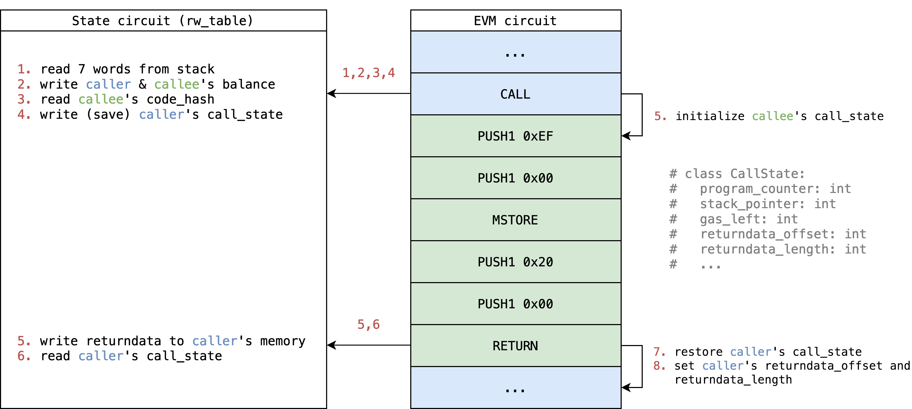

EVM Circuit
Introduction
EVM circuit iterates over transactions included in the proof to verify that each execution step of a transaction is valid. Basically the scale of a step is the same as in the EVM, so usually we handle one opcode per step, except those opcodes like SHA3 or CALLDATACOPY that operate on variable size of memory, which would require multiple "virtual" steps.
The scale of a step somehow could be different depends on the approach, an extreme case is to implement a VM with reduced instruction set (like TinyRAM) to emulate EVM, which would have a much smaller step, but not sure how it compares to current approach.
han
To verify if a step is valid, we first enumerate all possible execution results of a step in the EVM including success and error cases, and then build a custom constraint to verify that the step transition is correct for each execution result.
For each step, we constrain it to enable one of the execution results, and specially, to constrain the first step to enable BEGIN_TX, which then repeats the step to verify the full execution trace. Also each step is given access to next step to propagate the tracking information, by putting constraints like assert next.program_counter == curr.program_counter + 1.
Concepts
Execution result
It's intuitive to have each opcode as a branch in step. However, EVM has so rich opcodes that some of them are very similar like {ADD,SUB}, {PUSH*}, {DUP*} and {SWAP*} that seem to be handled by almost identical constraint with small tweak (to swap a value or automatically done due to linearity), it seems we could reduce our effort to only implement it once to handle multiple opcodes in single branch.
In addition, an EVM state transition could also contain serveral kinds of error cases, we also need to take them into consideration to be equivalent to EVM. It would be annoying for each opcode branch to handle their own error cases since it needs to halt the step and return the execution context to caller.
Fortunately, most error cases are easy to verify with some pre-built lookup table even they could happen to many opcodes, only some tough errors like out of gas due to dynamic gas usage need to be verified one by one. So we further unroll all kinds of error cases as kinds of execution result.
So we can enumerate all possible execution results and turn EVM circuit into a finite state machine like:
flowchart LR
BEGIN[.] --> BeginTx;
BeginTx --> |no code| EndTx;
BeginTx --> |has code| EVMExecStates;
EVMExecStates --> EVMExecStates;
EVMExecStates --> EndTx;
EndTx --> BeginTx;
EndTx --> EndBlock;
EndBlock --> EndBlock;
EndBlock --> END[.];
flowchart LR
subgraph A [EVMExecStates]
BEGIN2[.] --> SuccessStep;
BEGIN2[.] --> ReturnStep;
SuccessStep --> SuccessStep;
SuccessStep --> ReturnStep;
ReturnStep --> |not is_root| SuccessStep;
ReturnStep --> |not is_root| ReturnStep;
ReturnStep --> |is_root| END2[.];
end
- BeginTx:
- Beginning of a transaction.
- EVMExecStates = [ SuccessStep | ReturnStep ]
- SuccessStep = [ ExecStep | ExecMetaStep | ExecSubStep ]
- Set of states that suceed and continue the execution within the call.
- ReturnStep = [ ExplicitReturn | Error ]
- Set of states that halt the execution of a call and return to the caller or go to the next tx.
- ExecStep:
- 1-1 mapping with a GethExecStep for opcodes that map to a single gadget
with a single step. Example:
ADD,MUL,DIV,CREATE2.
- 1-1 mapping with a GethExecStep for opcodes that map to a single gadget
with a single step. Example:
- ExecMetaStep:
- N-1 mapping with a GethExecStep for opcodes that share the same gadget
(due to similarity) with a single step. For example
{ADD, SUB},{PUSH*},{DUP*}and{SWAP*}. A good example on how these are grouped is theStackOnlyOpcodestruct.
- N-1 mapping with a GethExecStep for opcodes that share the same gadget
(due to similarity) with a single step. For example
- ExecSubStep:
- 1-N mapping with a GethExecStep for opcodes that deal with dynamic size
arrays for which multiple steps are generated.
CALLDATACOPY-> CopyToMemoryRETURNDATACOPY-> TODOCODECOPY-> TODOEXTCODECOPY-> IN PROGRESSSHA3-> IN PROGRESSLOGN-> CopyToLog
- 1-N mapping with a GethExecStep for opcodes that deal with dynamic size
arrays for which multiple steps are generated.
- ExplicitReturn:
- 1-1 mapping with a GethExecStep for opcodes that return from a call without exception.
- Error = [ ErrorEnoughGas | ErrorOutOfGas ]
- Set of states that are associated with exceptions caused by opcodes.
- ErrorEnoughGas:
- Set of error states that are unrelated to out of gas. Example:
InvalidOpcode,StackOverflow,InvalidJump.
- Set of error states that are unrelated to out of gas. Example:
- ErrorOutOfGas:
- Set of error states for opcodes that run out of gas. For each opcode (sometimes group of opcodes) that has dynamic memory gas usage, there is a specific ErrorOutOfGas error state.
- EndTx
- End of a transaction.
- EndBlock
- End of a block (serves also as padding for the rest of the state step slots)
In the current implementation, we ask the opcode implementer to also implement error cases, which seems to be a redundant effort. But by doing this, they can focus more on opcode's success case. Also error cases are usually easier to verify, so I think it also reduces the overall implementation complexity.
han
Random access data
In EVM, the interpreter has the ability to do any random access to data like block context, account balance, stack and memory in current scope, etc... Some of these access are read-write and others are read-only.
In EVM circuit, we leverage the concept Circuit as a lookup table to duplicate these random data access to other circuits in a different layout and verify that they are consistent and valid. After these random data access are verified, we can use them just as if they were only tables. Here are the tables currently used in the EVM circuit.
For read-write access data, EVM circuit looks up State circuit with a sequentially rw_counter (read-write counter) to make sure the read-write access is chronological. It also uses a flag is_write to check data consistency between different write access.
For read-only access data, EVM circuit looks-up Bytecode circuit, Tx circuit and Call circuit directly.
Reversible write reversion
In EVM, reversible writes can be reverted if any call fails. There are many kinds of reversible writes, a complete list can be found here.
In EVM circuit, each call is attached with a flag (is_persistent) to know if it succeeds or not. So ideally, we only need to do reversion on these kinds of reversible writes which affect future execution before reversion:
TxAccessListAccountTxAccessListStorageSlotAccountNonceAccountBalanceAccountCodeHashAccountStorage
On some others we don't need to do reversion because they don't affect future execution before reversion, we only write them when is_persistent is 1:
TxRefundAccountDestructed
Another tag is
TxLog, which also doesn't affect future execution. It should be explained where to write such record to after we decide where to build receipt trie.han
To enable reversible write reversion, we need some meta information of a call:
is_persistent- To know if we need reversion or not.rw_counter_end_of_reversion- To know at which point in the future we should revert.reversible_write_counter- To know how many reversible writes we have done until now.
Then at each reversible write, we first check if is_persistent is 0, if so we do an extra reversible write at rw_counter_end_of_reversion - reversible_write_counter with the old value, which reverts the reversible write in a reverse order.
For more notes on reversible write reversion see:
Opcode fetching
In EVM circuit, there are 3 kinds of opcode source for execution or copy:
- Contract interaction:
Opcode is lookup from contract bytecode in Bytecode circuit by tuple
(code_hash, index, opcode) - Contract creation in root call:
Opcode is lookup from tx calldata in Tx circuit by tuple
(tx_id, TxTableTag.Calldata, index, opcode) - Contract creation in internal call:
Opcode is lookup from caller's memory in State circuit by tuple
(rw_counter, False, caller_id, index, opcode)
Before we fetch opcode from any source, it checks if the index is in the given range, if not, it follows the behavior of current EVM to implicitly returning 0.
Internal call
EVM supports internal call triggered by opcodes. In EVM circuit, the opcodes (like CALL or CREATE) that trigger internal call, will:
- Save their own
call_stateinto State circuit. - Setup next call's context.
- Initialize next step's
call_stateto start a new environment.
Then the opcodes (like RETURN or REVERT) and error cases that halt, will restore caller's call_state and set it back to next step.
For a simple CALL example with illustration (many details are hided for simplicity):

Constraints
main
==TODO== Explain each execution result